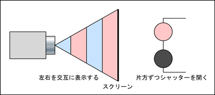
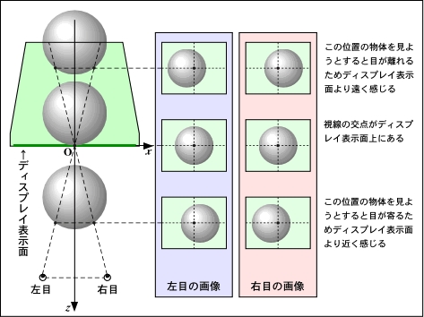

液晶シャッタメガネ（時分割方式）を用いた立体視の実現
液晶シャッタメガネの原理
両眼視差による立体視は, 右眼用と左眼用の画像を別々に生成することで実現できます. 一つのディスプレイでこの二つの画像を見ることができるように, 演習質の一部のパソコンには液晶シャッタメガネが用意されています.
ディスプレイの表示が１秒間に何回も書き替えられていることは, みなさん良くご存じのことと思います (テレビの前で手を振ったことないですか？). テレビの場合, この書き換えは1秒間に約60回, パソコンのディスプレイで大体60回から85回くらい行われています (もっと回数が多い場合もあります). この書き換え頻度のことを, リフレッシュレートと呼びます.
そこで, この書き換えの時に右眼用の画像と左眼用の画像を交互に表示して, 液晶シャッタメガネで右眼用の画像が表示されているときは左目を閉じ, 左眼用の画像が表示されているときは右目を閉じてしまいます. こうして一つのディスプレイで右目と左目に別々の絵を見せることができます.

これは時分割方式（フレームシーケンシャル）によるステレオ表示と呼ばれます.
クワッドバッファステレオ
この手法では右眼用の画面と左眼用の画面を別々に用意する必要があります. このメカニズムをステレオバッファと呼びます. 一方, アニメーション時のちらつきを抑制するために ダブルバッファリング を行っている場合にも 2 枚の画面が必要になります. したがって, ダブルバッファリングを行いながら立体視を行うには, 全部で 2 × 2 = 4 枚の画面が必要になります. そこでこの方式を クワッドバッファステレオ と呼びます. なかなか贅沢な手法なので, ちょっと前までこれが実現できるのは高価なハードウェアに限られていましたが, 最近ではパソコン用のビデオカードでも可能になってきています.
実験
GLUT では, glutInitDisplayMode() の引数に GLUT_DOUBLE と GLUT_STEREO を追加することにより, クワッドバッファステレオのモードに切り替えることができます. ただし, ビデオカード (あるいはそのドライバ) が クワッドバッファステレオをサポートしていなければ, 実行時にエラーとなってプログラムが終了します.
#include <stdlib.h>
...
int main(int argc, char *argv[])
{
glutInit(&argc, argv);
glutInitDisplayMode(GLUT_RGBA | GLUT_DEPTH | GLUT_DOUBLE | GLUT_STEREO);
...
return 0;
}
こうして描画時に画面 (バッファ) をに切り替えながら, それぞれに右眼用の画像と左眼用の画像を表示します. 画面の切り替えには glDrawBuffer() を使います. ダブルバッファなので, 両方とも背後の画面 (表示していない側の画面) に描きます.
... /* 右眼用のバッファの指定 */ glDrawBuffer(GL_BACK_RIGHT); /* 画面クリア */ glClear(GL_COLOR_BUFFER_BIT | GL_DEPTH_BUFFER_BIT); /* モデルビュー変換行列の初期化 */ glLoadIdentity(); /* 右眼の位置と方向 */ gluLookAt(/* ここは自分で考えてください */); /* 視点の移動 */ ... /* シーンの描画 */ ... /* 左眼用のバッファの指定 */ glDrawBuffer(GL_BACK_LEFT); /* 画面クリア */ glClear(GL_COLOR_BUFFER_BIT | GL_DEPTH_BUFFER_BIT); /* モデルビュー変換行列の初期化 */ glLoadIdentity(); /* 左眼の位置と方向 */ gluLookAt(/* ここは自分で考えてください */); /* 視点の移動 */ ... /* シーンの描画 */ ...
二つの視点の間隔とそれぞれの位置・方向, および fovy (実験１のサンプルでは 30 に設定されています) は, ディスプレイの表示面の高さ, 表示面との距離, 自分の両目の間隔の実測値から割り出してください.

本当は gluLookAt() を使わずに, gluPerspective() を glFrustum() に置き換えて左右の目の視野をずらしたほうが厳密なんですが, それだとプログラムが少しややこしくなりますし, glFrustum() の説明もしなきゃいけなくなるので手を抜きます.
なお, 演習室のディスプレイはリフレッシュレートが 80Hz (1秒間に80回書き換え) なので, ステレオモードにすると片目あたり 40Hz になって, 結構ちらつきが目立ちます. プログラムが完成してそれらしい画像が表示されることを確かめたら, ディスプレイの解像度を落としてリフレッシュレートを上げて見てください. GLUT のゲームモードを使えば, これをプログラム中から制御することもできます. 詳しくはここを参照してください.